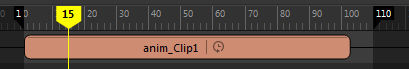
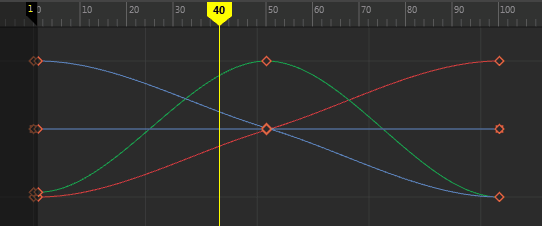

速度曲线使您可以将各种
向前速度指定给片段中的动画。
注： 您无法使速度曲线转为向后。
为片段创建速度曲线扭曲
- 在您要为其更改速度的片段中单击鼠标右键，然后从时间编辑器片段(Clip)上下文菜单中选择
。A
将打开
曲线图编辑器，且时间编辑器中的片段名称旁边将显示 。

- 在曲线图编辑器中编辑速度曲线。速度曲线将显示为紫色。

- 一旦激活“速度曲线”(Speed Curve)选项，即会在“片段”(Clip)上下文菜单中激活“速度曲线”(Speed Curve)选项。有关速度曲线选项的描述，请参见片段(Clip)上下文菜单中的“重定时”(Retime)区域。
编辑速度曲线
- 选择有速度曲线的片段。
- 在“时间编辑器”(Time Editor)工具栏中，单击“曲线图编辑器”(Graph Editor) 按钮以切换到“曲线图编辑器”(Graph Editor)。有关可用于编辑曲线的选项的信息，请参见“曲线图编辑器”(Graph Editor)。
- 在“曲线图编辑器”(Graph Editor)大纲视图中，选择速度曲线并单击“框显全部”(Frame All)
按钮或按 f 框显速度曲线。
- 在图表视图中，使用“插入关键帧工具”(Insert Keys Tool)插入关键帧并使用“移动工具”(Move Tool)调整曲线。
在曲线图视图中借助这些工具进行工作时，请使用鼠标中键。
注： 必须先在曲线图编辑器中选择整个曲线，插入关键帧工具才会起作用。
要撤消对速度曲线的编辑，请执行以下操作：
在“曲线图编辑器”(Graph Editor)中，单击 Ctrl-Z 撤消上一次更改。
若要将速度曲线恢复为原始曲线，请执行以下操作：
在时间编辑器中，单击鼠标右键，然后从片段上下文菜单中选择“重置“(Reset)。
若要从片段中删除速度曲线，请执行以下操作：
在时间编辑器中，单击鼠标右键，然后从片段上下文菜单中选择“删除“(Delete)。